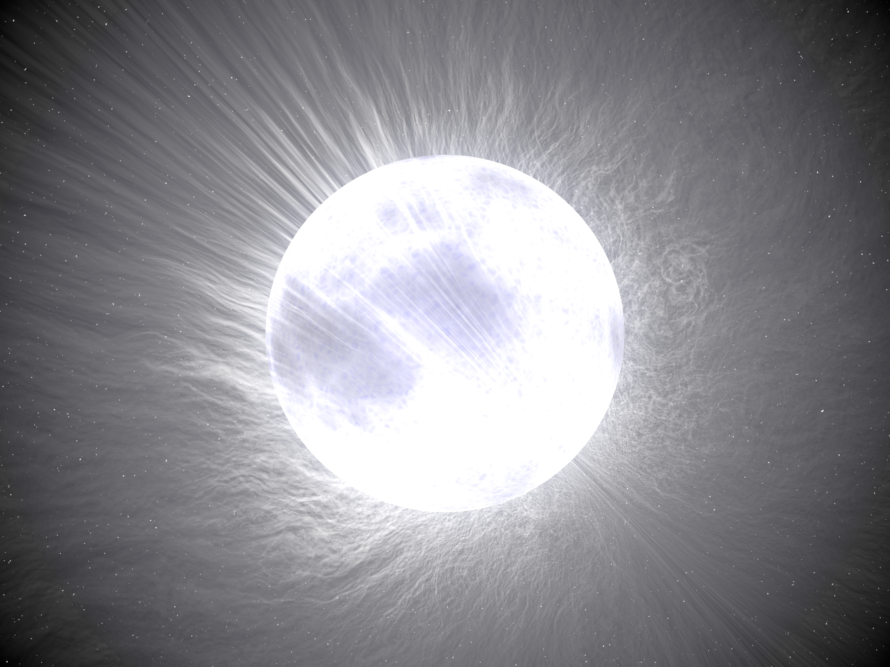

A peculiar A star, or Ap star (where ‘p’ stands for ‘peculiar’), is a main-sequence star of spectral type A or late B whose spectrum shows large overabundances of certain heavy metals—most notably strontium, chromium, and europium—combined with an unusually strong, organised magnetic field. These stars have surface temperatures of roughly 8,000–15,000 K and make up around 5–10% of hot main-sequence stars, yet their photospheric chemistry is wildly out of step with stars of otherwise similar spectral class.

Merikanto / Wikimedia Commons
{kind=link}
Atomic diffusion. The chemical peculiarities are not primordial but arise from atomic diffusion in the stable outer layers of the star. Two competing forces act on individual atoms: radiative levitation, in which radiation pressure pushes elements with many absorption lines toward the surface, and gravitational settling, which pulls heavier or less-absorbing atoms downward. The star’s strong magnetic field suppresses convective mixing, allowing these slow processes to operate over millions of years. Elements such as strontium, chromium, and europium levitate; helium, carbon, nitrogen, and oxygen tend to sink—producing abundance anomalies that can exceed a factor of 1,000 relative to solar values.
Oblique rotator model. Ap stars are spectrum variables: their spectral line strengths change periodically with the stellar rotation period. This is explained by the oblique rotator model, in which the magnetic dipole axis is tilted relative to the rotation axis. As the star rotates, different magnetic hemispheres come into view, and the abundance patches (‘spots’) tied to the magnetic geometry produce the observed periodic variations. Doppler imaging has been used to map these surface spots in dozens of systems. Ap stars typically rotate much more slowly than normal A-type stars, with equatorial velocities well under 100 km/s.
roAp stars. A subset known as rapidly oscillating Ap stars (roAp stars) pulsate in high-overtone non-radial pressure modes with periods of 5–23.6 minutes, with the pulsation axis aligned with the magnetic axis. Approximately 40 roAp stars are known. Donald Kurtz discovered the class in 1978 when he detected rapid oscillations in HD 101065 (Przybylski’s Star), the most chemically extreme Ap star known, which shows overabundances of rare-earth elements up to 1,000 times solar values. The nearest and brightest roAp star visible to the naked eye is Alpha Circini, an A7 star 54 light-years away with a dominant pulsation period of 6.8 minutes.
Classification. In the Preston (1974) system for chemically peculiar (CP) stars, Ap stars are formally designated CP2. Related but physically distinct classes include Am stars (CP1), which are non-magnetic metallic-line A stars found preferentially in binaries, and HgMn stars (CP3), which are also non-magnetic but show overabundances of mercury and manganese. The connection between magnetism and chemical peculiarity in Ap stars was first established by Horace Babcock in 1947 when he measured the magnetic field of 78 Virginis; the strongest field measured in any Ap star is 33.5 kG in HD 215441 (Babcock’s Star).
See also: spectral type, main-sequence stars, variable stars, abundance ratio, stellar evolution.